Ethernet Basics Report
Part 1: Theoretical
1.1 Ethernet Standards
Ethernet has several physical layer standards such as:
- 10BASE-T – 10 Mbps
- 100BASE-TX – 100 Mbps
- 1000BASE-T – 1 Gbps
- 10GBASE-T – 10 Gbps
Ethernet limits: maximum cable length is usually 100 meters for copper twisted-pair cables.
Ethernet frame: Contains destination MAC, source MAC, type field, data, and CRC.
1.2 MAC Address & Broadcasting
A MAC address is a 48-bit hardware address assigned to network devices. Broadcasting sends a frame to all devices in the LAN using the address FF:FF:FF:FF:FF:FF.
1.3 Hub vs Switch vs Router
- Hub: Sends data to all ports (no intelligence).
- Switch: Sends data only to the correct device using MAC addresses.
- Router: Connects networks and uses IP addresses.
1.4 CSMA/CD, Collision, Duplex
CSMA/CD: A method used in older Ethernet to avoid collisions.
Collision: When two devices send data at the same time.
Half duplex: Devices can send OR receive (not both).
Full duplex: Devices can send AND receive at the same time.
1.5 ARP & Duplicate IP Detection
ARP request: A broadcast asking “Who has this IP?”
Duplicate IP detection: A device sends ARP probes to check if another device uses the same IP.
1.6 BOOTP & DHCP
BOOTP: Older protocol used to assign IP addresses.
DHCP: Newer protocol that automatically gives IPs, DNS, and gateway settings.
1.7 VLANs
VLANs split networks into logical groups, even if devices are not physically separated.
Part 2: Practical
Title 1
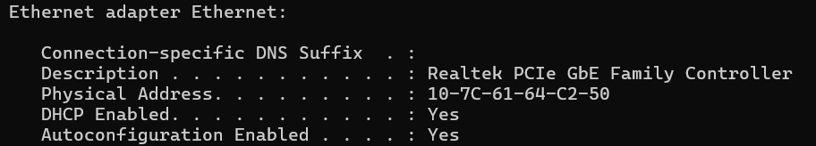
MAC address as Physical Address, Adapter producer: Realtek
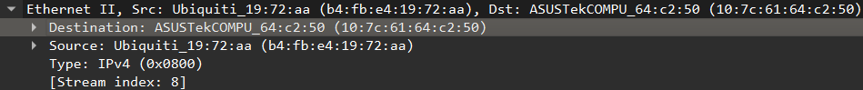
MAC address of default gateway: b4:fb:e4:19:72:aa

Arp flushed with "netsh interface ip delete arpcache" and checked with arp -a
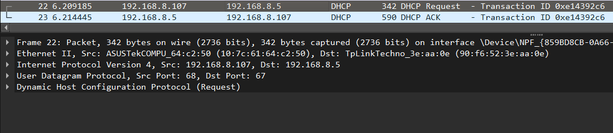
DHCP request and ACK captured with Wireshark
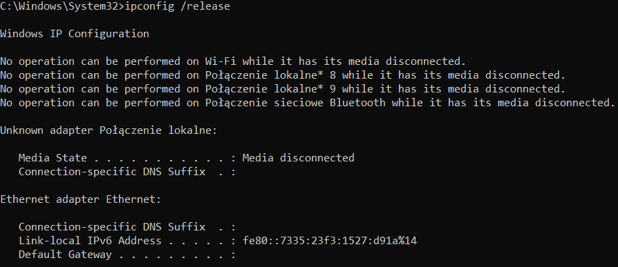
ipconfig /release command output
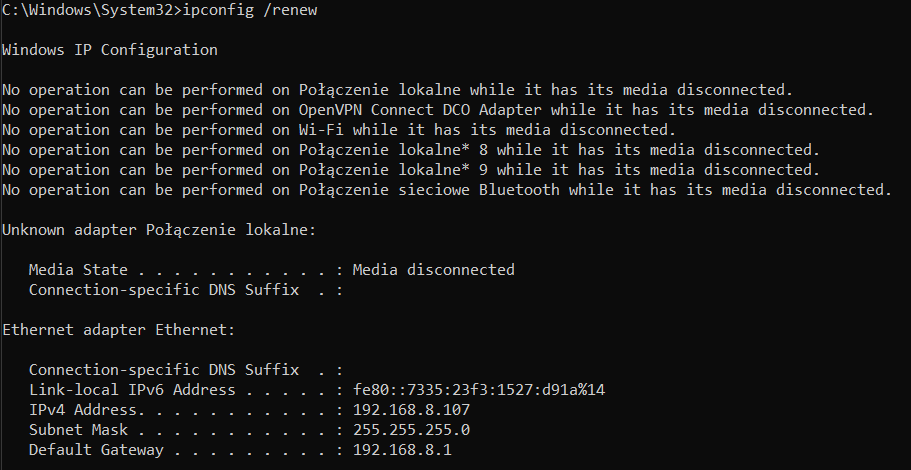
ipconfig /renew command output
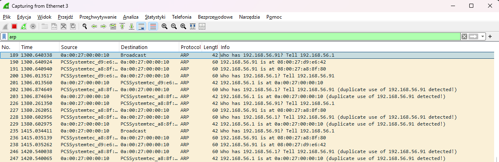
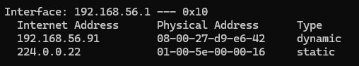
Only one host appears after checking with arp -a in cmd, but wireshark shows two hosts with the same IP
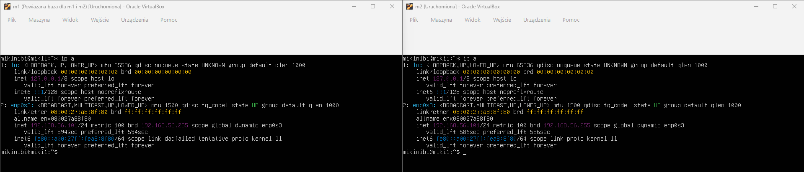
Both have the same mac addresses and receive the same IP
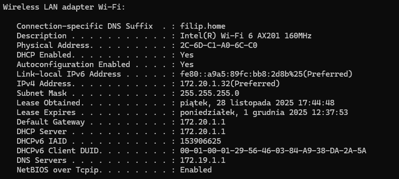
MAC address as Physical Address
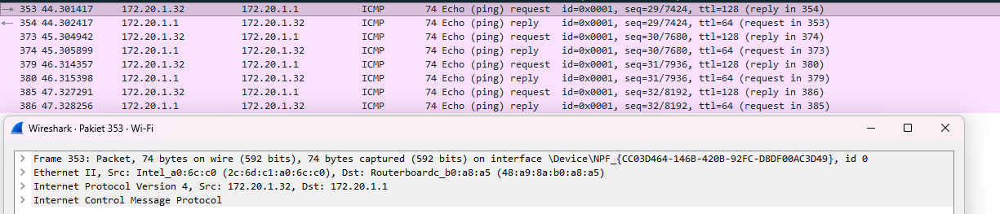
MAC address of Default gateway: 48:a9:8a:b0:a8:a5
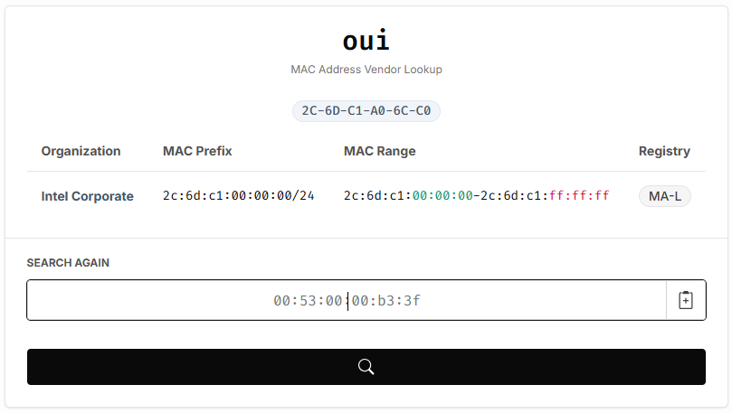
Producer - Intel
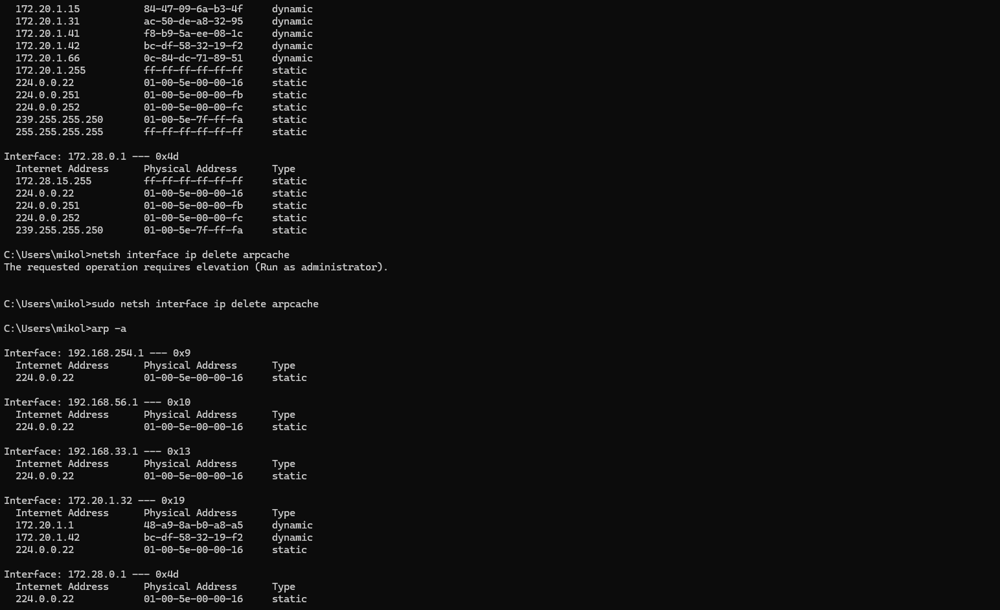
Arp flushed with "netsh interface ip delete arpcache" and checked with arp -a before and after - clear difference
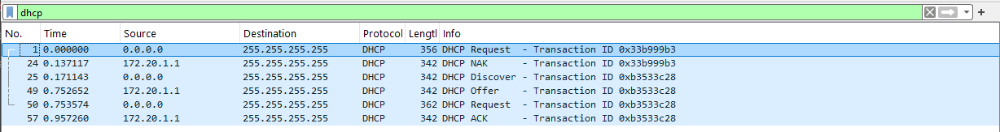
DHCP request and ACK captured with Wireshark
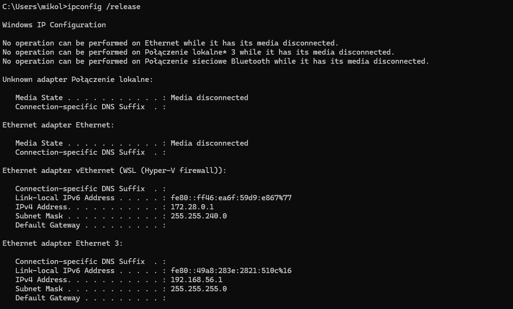
ipconfig /release command output
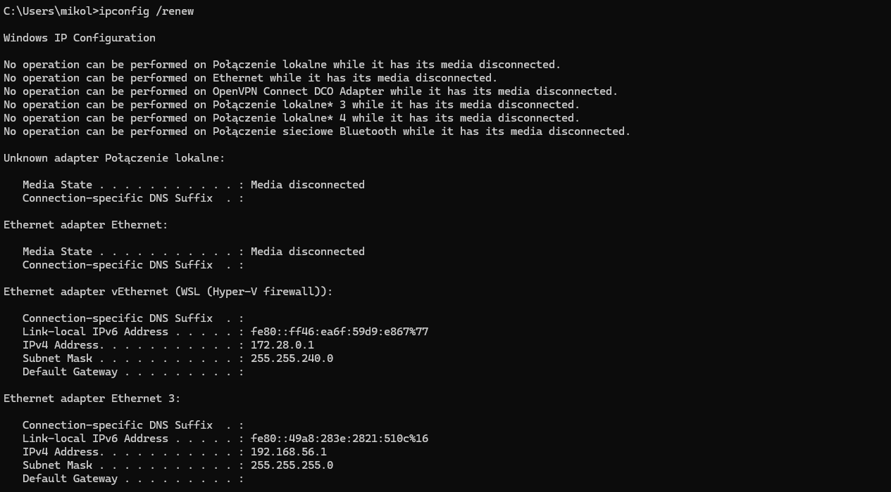
ipconfig /renew command output